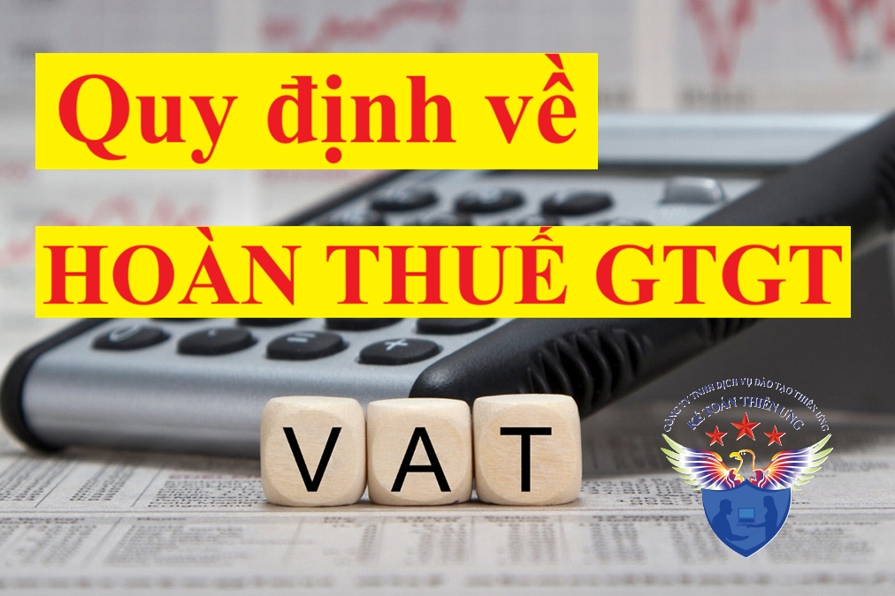

Theo nghị định 181/2025/NĐ-CP quy định các đối tượng và trường hợp được hoàn thuế GTGT, điều kiện và thủ tục hoàn thuế GTGT, hồ sơ hoàn thuế giá trị gia tăng cụ thể như sau:
I. Điều kiện hoàn thuế GTGT:
Cơ sở kinh doanh thuộc trường hợp hoàn thuế quy định tại Mục này phải đáp ứng điều kiện sau đây:
1. Cơ sở kinh doanh thuộc trường hợp được hoàn thuế theo quy định tại các Điều 29, Điều 30, Điều 31, Điều 32 Nghị định này phải là cơ sở kinh doanh nộp thuế giá trị gia tăng theo phương pháp khấu trừ thuế, lập và lưu giữ sổ kế toán, chứng từ kế toán theo quy định của pháp luật về kế toán; có tài khoản tiền gửi tại ngân hàng theo mã số thuế của cơ sở kinh doanh.
2. Đáp ứng quy định về khấu trừ thuế giá trị gia tăng đầu vào theo quy định tại Mục 2 Chương III và không thuộc trường hợp quy định tại khoản 15 Điều 23 Nghị định này.
3. Người bán đã kê khai, nộp thuế giá trị gia tăng theo quy định đối với hóa đơn đã xuất cho cơ sở kinh doanh đề nghị hoàn thuế được xác định như sau:
a) Tại thời điểm cơ sở kinh doanh nộp hồ sơ hoàn thuế, người bán đã nộp hồ sơ khai thuế giá trị gia tăng theo quy định và không còn nợ tiền thuế giá trị gia tăng của kỳ tính thuế tương ứng với kỳ tính thuế thuộc kỳ hoàn thuế của cơ sở kinh doanh đề nghị hoàn thuế.
b) Cơ quan quản lý thuế tại thời điểm cơ sở kinh doanh nộp hồ sơ hoàn thuế trên cơ sở kết quả xử lý của hệ thống công nghệ thông tin tự động để xác định người bán đã kê khai, nộp thuế giá trị gia tăng theo quy định.
c) Trường hợp xác định người bán chưa nộp đầy đủ hồ sơ khai thuế giá trị gia tăng của kỳ tính thuế tương ứng với kỳ tính thuế thuộc kỳ hoàn thuế của cơ sở kinh doanh (bao gồm cả trường hợp chưa đến thời hạn nộp hồ sơ khai thuế) hoặc còn nợ tiền thuế giá trị gia tăng của kỳ tính thuế tương ứng với kỳ tính thuế thuộc kỳ hoàn thuế thì cơ sở kinh doanh không được hoàn thuế đối với các hóa đơn tương ứng với kỳ tính thuế người bán chưa nộp đầy đủ hồ sơ khai thuế giá trị gia tăng hoặc còn nợ tiền thuế giá trị gia tăng.
4. Tại thời điểm cơ sở kinh doanh nộp hồ sơ hoàn thuế, cơ sở kinh doanh thuộc trường hợp hoàn thuế giá trị gia tăng, có số thuế giá trị gia tăng đầu vào đáp ứng đầy đủ điều kiện hoàn thuế theo quy định tại Mục này và tuân thủ các quy định về khai thuế theo quy định của pháp luật về quản lý thuế, lập hồ sơ hoàn thuế giá trị gia tăng đối với từng trường hợp hoàn thuế giá trị gia tăng và gửi đến cơ quan thuế có thẩm quyền tiếp nhận. Cơ quan thuế phân loại hồ sơ hoàn thuế giá trị gia tăng thuộc diện hoàn thuế trước hoặc kiểm tra trước hoàn thuế và giải quyết hồ sơ hoàn thuế giá trị gia tăng theo quy định của pháp luật về quản lý thuế.
(Theo điều 37 - Nghị định 181/2025/NĐ-CP)
II. Đối tượng được hoàn thuế GTGT:
A. Hoàn thuế đối với xuất khẩu
1. Cơ sở kinh doanh trong tháng, quý có hàng hóa, dịch vụ xuất khẩu nếu có số thuế giá trị gia tăng đầu vào chưa được khấu trừ hết từ 300 triệu đồng trở lên thì được hoàn thuế giá trị gia tăng theo tháng, quý, trừ trường hợp hàng hóa nhập khẩu sau đó xuất khẩu sang nước khác. Trong đó:
a) Đối tượng được hoàn thuế trong một số trường hợp xuất khẩu được xác định như sau: đối với trường hợp ủy thác xuất khẩu là cơ sở kinh doanh có hàng hóa ủy thác xuất khẩu; đối với gia công chuyển tiếp là cơ sở kinh doanh ký hợp đồng gia công xuất khẩu với bên nước ngoài; đối với hàng hóa xuất khẩu để thực hiện công trình xây dựng ở nước ngoài là cơ sở kinh doanh có hàng hóa xuất khẩu thực hiện công trình xây dựng ở nước ngoài.
b) Hàng hóa nhập khẩu sau đó xuất khẩu sang nước khác là hàng hóa do cơ sở kinh doanh nhập khẩu từ nước ngoài vào Việt Nam sau đó trực tiếp xuất khẩu hoặc ủy thác xuất khẩu, không bao gồm hàng hóa là nguyên liệu nhập khẩu để sản xuất, gia công hàng xuất khẩu.
2. Cơ sở kinh doanh trong tháng, quý vừa có hàng hóa, dịch vụ xuất khẩu, vừa có hàng hóa, dịch vụ tiêu thụ nội địa thì cơ sở kinh doanh phải hạch toán riêng số thuế giá trị gia tăng đầu vào sử dụng cho sản xuất, kinh doanh hàng hóa, dịch vụ xuất khẩu; trường hợp không hạch toán riêng được thi số thuế giá trị gia tăng đầu vào của hàng hóa, dịch vụ xuất khẩu được xác định theo tỷ lệ giữa doanh thu của hàng hóa, dịch vụ xuất khẩu trên tổng doanh thu hàng hóa, dịch vụ chịu thuế của kỳ hoàn thuế. Kỳ hoàn thuế được xác định từ kỳ tính thuế giá trị gia tăng có số thuế giá trị gia tăng đầu vào chưa khấu trừ hết liên tục chưa được hoàn thuế đến kỳ tính thuế có đề nghị hoàn thuế, số thuế giá trị gia tăng đầu vào của hàng hóa, dịch vụ xuất khẩu (bao gồm số thuế giá trị gia tăng đầu vào hạch toán riêng được và số thuế giá trị gia tăng đầu vào được xác định theo tỷ lệ nêu trên) nếu sau khi bù trừ với số thuế giá trị gia tăng phải nộp của hàng hóa, dịch vụ tiêu thụ nội địa còn lại từ 300 triệu đồng trở lên thì cơ sở kinh doanh được hoàn thuế cho hàng hóa, dịch vụ xuất khẩu. Số thuế giá trị gia tăng được hoàn của hàng hóa, dịch vụ xuất khẩu không vượt quá 10% doanh thu của hàng hóa, dịch vụ xuất khẩu của kỳ hoàn thuế. Số thuế giá trị gia tăng đầu vào đã được xác định cho hàng hóa, dịch vụ xuất khẩu nhưng chưa được hoàn do vượt quá 10% doanh thu của hàng hóa, dịch vụ xuất khẩu của kỳ hoàn thuế trước được khấu trừ vào kỳ tính thuế tiếp theo để xác định số thuế giá trị gia tăng được hoàn của hàng hóa, dịch vụ xuất khẩu kỳ hoàn thuế tiếp theo. Bộ Tài chính quy định cách xác định số thuế giá trị gia tăng được hoàn đối với hàng hóa, dịch vụ xuất khẩu.
(Theo điều 29 - NĐ 181/2025/NĐ-CP)
B. Hoàn thuế đối với đầu tư
1. Cơ sở kinh doanh đã đăng ký nộp thuế giá trị gia tăng theo phương pháp khấu trừ thuế có dự án đầu tư (dự án đầu tư mới, dự án đầu tư mở rộng) theo quy định của pháp luật về đầu tư (bao gồm cả dự án đầu tư được chia thành nhiều giai đoạn đầu tư hoặc nhiều hạng mục đầu tư, trừ trường hợp dự án đầu tư không hình thành tài sản cố định của doanh nghiệp) đang trong giai đoạn đầu tư hoặc dự án tìm kiếm thăm dò, phát triển mỏ dầu khí đang trong giai đoạn đầu tư có số thuế giá trị gia tăng đầu vào phát sinh trong giai đoạn đầu tư mà chưa được hoàn thuế thì cơ sở kinh doanh thực hiện bù trừ với số thuế giá trị gia tăng phải nộp của hoạt động sản xuất, kinh doanh đang thực hiện (nếu có).
Sau khi bù trừ nếu số thuế giá trị gia tăng đầu vào của dự án đầu tư chưa được khấu trừ hết từ 300 triệu đồng trở lên thì được hoàn thuế giá trị gia tăng. Trường hợp dự án đầu tư đã hoàn thành (bao gồm cả dự án đầu tư chia thành nhiều giai đoạn, hạng mục đầu tư có giai đoạn, hạng mục đầu tư đã hoàn thành) nhưng cơ sở kinh doanh chưa thực hiện hoàn thuế giá trị gia tăng phát sinh trong giai đoạn đầu tư (hạng mục đầu tư, giai đoạn đầu tư đã hoàn thành) thì cơ sở kinh doanh thực hiện nộp hồ sơ hoàn thuế giá trị gia tăng theo quy định trong thời hạn 01 năm kể từ ngày dự án đầu tư hoặc ngày giai đoạn đầu tư, hạng mục đầu tư hoàn thành. Ngày dự án đầu tư hoặc ngày giai đoạn, hạng mục đầu tư hoàn thành là ngày phát sinh doanh thu của dự án đầu tư hoặc ngày phát sinh doanh thu của giai đoạn, hạng mục đầu tư. Doanh thu quy định tại Điều này không bao gồm doanh thu phát sinh trong giai đoạn chạy thử, doanh thu hoạt động tài chính, thanh lý nguyên vật liệu của dự án đầu tư.
Trường hợp cơ sở kinh doanh là chủ dự án đầu tư thành lập tổ chức kinh tế mới hoặc giao cho Ban Quản lý dự án, chi nhánh trực tiếp thực hiện, quản lý dự án đầu tư thì tổ chức kinh tế mới thành lập, Ban Quản lý dự án, chi nhánh được khấu trừ và hoàn thuế giá trị gia tăng đối với dự án đầu tư. Tổ chức kinh tế mới thành lập, Ban Quản lý dự án, chi nhánh phải bù trừ số thuế giá trị gia tăng của hàng hóa, dịch vụ mua vào sử dụng cho dự án đầu tư với số thuế giá trị gia tăng phải nộp của hoạt động sản xuất, kinh doanh đang thực hiện của cơ sở kinh doanh, tổ chức kinh tế, chi nhánh cùng kỳ tính thuế (nếu có).
Sau khi bù trừ nếu số thuế giá trị gia tăng đầu vào của dự án đầu tư chưa được khấu trừ hết từ 300 triệu đồng trở lên thì được hoàn thuế giá trị gia tăng theo quy định tại Điều này. Khi dự án đầu tư, giai đoạn đầu tư, hạng mục đầu tư đã hoàn thành, trường hợp tổ chức kinh tế mới thành lập, Ban Quản lý dự án, chi nhánh không tiếp tục quản lý, vận hành hoạt động sản xuất, kinh doanh mà do chủ dự án đầu tư trực tiếp quản lý, vận hành hoạt động sản xuất, kinh doanh hoặc giao cho cơ sở kinh doanh khác quản lý, vận hành hoạt động sản xuất, kinh doanh thì tổ chức kinh tế mới thành lập, Ban Quản lý dự án, chi nhánh phải bàn giao số thuế giá trị gia tăng chưa khấu trừ hết của dự án đầu tư để bàn giao cho chủ dự án đầu tư hoặc cơ sở kinh doanh được giao quản lý, vận hành hoạt động sản xuất, kinh doanh để tiếp tục kê khai, khấu trừ cho hoạt động sản xuất, kinh doanh vào kỳ tính thuế tiếp theo ngày dự án đầu tư hoặc ngày giai đoạn đầu tư, hạng mục đầu tư hoàn thành.
Trường hợp dự án đầu tư đang trong giai đoạn đầu tư chưa đi vào hoạt động sản xuất, kinh doanh nhưng phải chấm dứt hoạt động của dự án đầu tư, chưa phát sinh thuế giá trị gia tăng đầu ra của hoạt động sản xuất, kinh doanh chính theo dự án đầu tư thì cơ sở kinh doanh phải nộp lại số thuế giá trị gia tăng đã được hoàn của dự án đầu tư vào ngân sách nhà nước theo quy định của pháp luật về quản lý thuế; đối với số thuế giá trị gia tăng chưa được hoàn thì không được giải quyết hoàn thuế.
2. Đối với dự án đầu tư của cơ sở kinh doanh ngành, nghề đầu tư kinh doanh có điều kiện thuộc các trường hợp sau thì cơ sở kinh doanh được hoàn thuế giá trị gia tăng đối với dự án đầu tư theo quy định tại khoản 1 Điều này:
a) Dự án đầu tư trong giai đoạn đầu tư, theo quy định của pháp luật đầu tư, pháp luật chuyên ngành đã được cơ quan nhà nước có thẩm quyền cấp giấy kinh doanh ngành, nghề đầu tư kinh doanh có điều kiện theo một trong các hình thức: giấy phép hoặc giấy chứng nhận hoặc văn bản xác nhận, chấp thuận.
b) Dự án đầu tư trong giai đoạn đầu tư, theo quy định của pháp luật đầu tư, pháp luật chuyên ngành chưa phải đề nghị cơ quan nhà nước có thẩm quyền cấp giấy kinh doanh ngành, nghề đầu tư kinh doanh có điều kiện theo một trong các hình thức: giấy phép hoặc giấy chứng nhận hoặc văn bản xác nhận, chấp thuận.
c) Dự án đầu tư theo quy định của pháp luật đầu tư, pháp luật chuyên ngành không phải có giấy kinh doanh ngành, nghề đầu tư kinh doanh có điều kiện theo một trong các hình thức: giấy phép hoặc giấy chứng nhận hoặc văn bản xác nhận, chấp thuận.
3. Cơ sở kinh doanh không được hoàn thuế giá trị gia tăng mà được kết chuyển số thuế chưa được khấu trừ của dự án đầu tư theo quy định của pháp luật về đầu tư sang kỳ tiếp theo đối với các trường hợp sau đây:
a) Dự án đầu tư của cơ sở kinh doanh không góp đủ số vốn điều lệ như đã đăng ký tại thời điểm nộp hồ sơ hoàn thuế.
b) Dự án đầu tư của cơ sở kinh doanh ngành, nghề đầu tư kinh doanh có điều kiện khi chưa đủ các điều kiện kinh doanh theo quy định của pháp luật về đầu tư trừ trường hợp quy định tại khoản 2 Điều này.
c) Dự án đầu tư của cơ sở kinh doanh ngành, nghề đầu tư kinh doanh có điều kiện không bảo đảm duy trì đủ điều kiện kinh doanh trong quá trình hoạt động là dự án đầu tư của cơ sở kinh doanh ngành, nghề đầu tư kinh doanh có điều kiện nhưng trong quá trình hoạt động cơ sở kinh doanh bị thu hồi một trong các giấy kinh doanh ngành, nghề đầu tư kinh doanh có điều kiện: giấy phép hoặc giấy chứng nhận hoặc văn bản xác nhận, chấp thuận; hoặc trong quá trình hoạt động cơ sở kinh doanh không đáp ứng được điều kiện để thực hiện đầu tư kinh doanh có điều kiện theo quy định của pháp luật về đầu tư thì thời điểm không hoàn thuế giá trị gia tăng được tính từ thời điểm cơ sở kinh doanh bị thu hồi một trong các loại giấy tờ nêu trên hoặc từ thời điểm cơ quan nhà nước có thẩm quyền kiểm tra, phát hiện cơ sở kinh doanh không đáp ứng được các điều kiện về đầu tư kinh doanh có điều kiện.
d) Dự án đầu tư khai thác tài nguyên, khoáng sản (không bao gồm dự án tìm kiếm thăm dò, phát triển mỏ dầu khí quy định tại khoản 1 Điều này) và dự án đầu tư sản xuất sản phẩm là tài nguyên, khoáng sản khai thác đã chế biến thành sản phẩm khác quy định tại khoản 14 Điều 4 của Nghị định này.
(Theo điều 30 - NĐ 181/2025/NĐ-CP)
C. Hoàn thuế đối với hàng hóa, dịch vụ chịu thuế suất thuế giá trị gia tăng 5%
Cơ sở kinh doanh chỉ sản xuất hàng hóa, cung cấp dịch vụ chịu thuế suất thuế giá trị gia tăng 5% nếu có số thuế giá trị gia tăng đầu vào chưa được khấu trừ hết từ 300 triệu đồng trở lên sau 12 tháng liên tục hoặc 04 quý liên tục thì được hoàn thuế giá trị gia tăng.
Trường hợp cơ sở kinh doanh sản xuất hàng hóa, cung cấp dịch vụ chịu nhiều mức thuế suất thuế giá trị gia tăng thì cơ sở kinh doanh phải hạch toán riêng số thuế giá trị gia tăng đầu vào sử dụng cho sản xuất hàng hóa, cung cấp dịch vụ chịu thuế suất thuế giá trị gia tăng 5%, đối với số thuế giá trị gia tăng đầu vào sử dụng đồng thời cho sản xuất hàng hóa, cung cấp dịch vụ chịu thuế suất thuế giá trị gia tăng 5% và sử dụng cho sản xuất, kinh doanh hàng hóa, dịch vụ chịu nhiều mức thuế suất khác (bao gồm hàng hóa chịu thuế suất thuế giá trị gia tăng 5% khâu kinh doanh thương mại) nếu không hạch toán riêng được thì số thuế giá trị gia tăng đầu vào sử dụng cho sản xuất hàng hóa, cung cấp dịch vụ chịu thuế suất thuế giá trị gia tăng 5% được xác định theo tỷ lệ giữa doanh thu của hoạt động sản xuất hàng hóa, cung cấp dịch vụ chịu thuế suất thuế giá trị gia tăng 5% trên tổng doanh thu hàng hóa, dịch vụ chịu thuế của kỳ hoàn thuế.
Kỳ hoàn thuế được xác định từ kỳ tính thuế giá trị gia tăng theo thuế suất thuế giá trị gia tăng 5% có số thuế giá trị gia tăng đầu vào chưa khấu trừ hết liên tục chưa được hoàn thuế đến kỳ tính thuế có đề nghị hoàn thuế, số thuế giá trị gia tăng đầu vào sử dụng cho sản xuất hàng hóa, cung cấp dịch vụ chịu thuế suất thuế giá trị gia tăng 5% (bao gồm số thuế giá trị gia tăng đầu vào hạch toán riêng được và số thuế giá trị gia tăng đầu vào được xác định theo tỷ lệ nêu trên) nếu sau khi bù trừ với số thuế giá trị gia tăng phải nộp của hàng hóa, dịch vụ chịu thuế (nếu có) còn lại từ 300 triệu đồng trở lên thì cơ sở kinh doanh được hoàn thuế giá trị gia tăng đầu vào sử dụng cho sản xuất hàng hóa, cung cấp dịch vụ chịu thuế suất thuế giá trị gia tăng 5%.
Bộ Tài chính quy định cách xác định số thuế giá trị gia tăng được hoàn đối với hoạt động sản xuất hàng hóa, cung cấp dịch vụ chịu thuế suất thuế giá trị gia tăng 5%.
(Theo điều 31- NĐ 181/2025/NĐ-CP)
D. Hoàn thuế đối với cơ sở kinh doanh khi giải thể, phá sản
Cơ sở kinh doanh nộp thuế giá trị gia tăng theo phương pháp khấu trừ thuế được hoàn thuế giá trị gia tăng khi giải thể, phá sản có số thuế giá trị gia tăng nộp thừa hoặc số thuế giá trị gia tăng đầu vào chưa được khấu trừ hết (trừ trường hợp cơ sở kinh doanh giải thể và chấm dứt hoạt động của dự án đầu tư quy định tại khoản 1 Điều 30 Nghị định này).
Cơ sở kinh doanh phải thực hiện theo quy định của pháp luật về giải thể, phá sản và quản lý thuế. Trường hợp chi nhánh của doanh nghiệp nộp thuế giá trị gia tăng theo phương pháp khấu trừ thuế giải thể, tổ hợp tác nộp thuế theo phương pháp khấu trừ thuế chuyển đổi thành hợp tác xã, liên hiệp hợp tác xã thì doanh nghiệp, hợp tác xã, liên hiệp hợp tác xã được kế thừa số thuế giá trị gia tăng nộp thừa hoặc số thuế giá trị gia tăng đầu vào chưa được khấu trừ hết của tổ hợp tác, chi nhánh để khấu trừ, hoàn thuế theo quy định.
(Theo điều 32- NĐ 181/2025/NĐ-CP)
E. Hoàn thuế đối với hàng hóa mua tại Việt Nam mang theo khi xuất cảnh
Người nước ngoài, người Việt Nam định cư ở nước ngoài (trừ thành viên của Tổ bay theo quy định của pháp luật về hàng không, thành viên của Đoàn thủy thủ theo quy định của pháp luật về hàng hải) mang hộ chiếu hoặc giấy tờ có giá trị đi lại quốc tế được hoàn thuế đối với hàng hóa mua tại Việt Nam mang theo khi xuất cảnh. Hồ sơ, thủ tục, số thuế được hoàn, phương thức hoàn thuế đối với trường hợp quy định tại khoản này được quy định tại Phụ lục IV ban hành kèm theo Nghị định này.
(Theo điều 33- NĐ 181/2025/NĐ-CP
F. Hoàn thuế đối với các chương trình, dự án sử dụng vốn hỗ trợ phát triển chính thức (ODA) không hoàn lại hoặc viện trợ không hoàn lại, viện trợ nhân đạo
Việc hoàn thuế giá trị gia tăng đối với các chương trình, dự án sử dụng vốn hỗ trợ phát triển chính thức (ODA) không hoàn lại hoặc viện trợ không hoàn lại, viện trợ nhân đạo được quy định như sau:
1. Chủ chương trình, dự án hoặc nhà thầu chính (bao gồm cả Văn phòng điều hành của nhà thầu chính tại Việt Nam), tổ chức do phía nhà tài trợ nước ngoài chỉ định việc quản lý chương trình, dự án sử dụng vốn ODA (bao gồm cả Văn phòng đại diện của nhà tài trợ hoặc tổ chức quản lý, thực hiện chương trình, dự án do nhà tài trợ chỉ định) được hoàn số thuế giá trị gia tăng đã trả cho hàng hóa, dịch vụ mua tại Việt Nam để phục vụ cho chương trình, dự án.
2. Tổ chức ở Việt Nam sử dụng tiền viện trợ không hoàn lại, tiền viện trợ nhân đạo của tổ chức, cá nhân nước ngoài để mua hàng hóa, dịch vụ phục vụ cho chương trình, dự án viện trợ không hoàn lại, viện trợ nhân đạo tại Việt Nam thì được hoàn số thuế giá trị gia tăng đã trả cho hàng hóa, dịch vụ đó.
(Theo điều 34- NĐ 181/2025/NĐ-CP
G. Hoàn thuế đối với hàng hóa, dịch vụ mua tại Việt Nam của đối tượng được hưởng quyền ưu đãi miễn trừ ngoại giao
Đối tượng được hưởng quyền ưu đãi miễn trừ ngoại giao theo quy định của pháp luật về ngoại giao mua hàng hóa, dịch vụ tại Việt Nam đế sử dụng được hoàn số thuế giá trị gia tăng đã trả ghi trên hóa đơn giá trị gia tăng hoặc trên chứng từ thanh toán ghi giá thanh toán đã có thuế giá trị gia tăng.
(Theo điều 35- NĐ 181/2025/NĐ-CP
H. Hoàn thuế theo điều ước quốc tế
Cơ sở kinh doanh có quyết định hoàn thuế giá trị gia tăng của cơ quan có thẩm quyền theo quy định của pháp luật và trường hợp hoàn thuế giá trị gia tăng theo điều ước quốc tế mà nước Cộng hòa xã hội chủ nghĩa Việt Nam là thành viên.
(Theo điều 35- NĐ 181/2025/NĐ-CP
III. Thủ tục hoàn thuế GTGT: Hồ sơ bao gồm:
- Giấy đề nghị hoàn trả khoản thu NSNN mẫu 01/HT (ban hành kèm theo thông tư 80/2021/TT-BTC)
- Ngoài Mẫu 01/HT bên trên, tùy từng đối tượng hoàn thuế mà hồ sơ sẽ cần thêm các giấy tờ sau:
1. Hoàn thuế GTGT hàng hóa, dịch vụ xuất khẩu:
-
Bảng kê hoá đơn, chứng từ hàng hoá, dịch vụ mua vào theo mẫu số 01-1/HT ban hành kèm theo phụ lục I Thông tư này, trừ trường hợp người nộp thuế đã gửi hóa đơn điện tử đến cơ quan thuế;
-
Danh sách tờ khai hải quan đã thông quan theo mẫu số 01-2/HT ban hành kèm theo phụ lục I Thông tư này đối với hàng hóa xuất khẩu đã thông quan theo quy định về pháp luật hải quan.
2. Hoàn thuế GTGT dự án đầu tư:
-
Bản sao Giấy chứng nhận đăng ký đầu tư hoặc Giấy chứng nhận đầu tư hoặc Giấy phép đầu tư đối với trường hợp phải làm thủ tục cấp giấy chứng nhận đăng ký đầu tư;
-
Đối với dự án có công trình xây dựng: Bản sao Giấy chứng nhận quyền sử dụng đất hoặc quyết định giao đất hoặc hợp đồng cho thuê đất của cơ quan có thẩm quyền; giấy phép xây dựng;
-
Bản sao Chứng từ góp vốn điều lệ;
-
Bảng kê hoá đơn, chứng từ hàng hoá, dịch vụ mua vào theo mẫu số 01-1/HT ban hành kèm theo phụ lục I Thông tư này, trừ trường hợp người nộp thuế đã gửi hóa đơn điện tử đến cơ quan thuế;
-
Quyết định thành lập Ban Quản lý dự án, Quyết định giao quản lý dự án đầu tư của chủ dự án đầu tư, Quy chế tổ chức và hoạt động của chi nhánh hoặc Ban quản lý dự án đầu tư (nếu chi nhánh, Ban quản lý dự án thực hiện hoàn thuế).
3. Hồ sơ hoàn thuế, phí nộp thừa đối với người nộp thuế sáp nhập, hợp nhất, chia, tách, giải thể, phá sản, chuyển đổi sở hữu, chấm dứt hoạt động
-
Quyết định của cấp có thẩm quyền về việc sáp nhập, hợp nhất, chia, tách, giải thể, phá sản, chuyển đổi sở hữu, chấm dứt hoạt động;
-
Hồ sơ quyết toán thuế hoặc hồ sơ khai thuế đến thời điểm sáp nhập, hợp nhất, chia, tách, giải thể, phá sản, chuyển đổi sở hữu, chấm dứt hoạt động.
4. Hoàn thuế GTGT đối với chương trình, dự án sử dụng vốn hỗ trợ phát triển chính thức (ODA) không hoàn lại:
4.1) Trường hợp vốn ODA không hoàn lại do chủ chương trình, dự án trực tiếp quản lý, thực hiện:
4.1.1) Bản sao Điều ước quốc tế hoặc thỏa thuận vốn ODA không hoàn lại hoặc văn bản trao đổi về việc cam kết và tiếp nhận vốn ODA không hoàn lại; bản sao Quyết định phê duyệt Văn kiện dự án, phi dự án hoặc Quyết định đầu tư chương trình và Văn kiện dự án hoặc Báo cáo nghiên cứu khả thi được phê duyệt theo quy định tại điểm a, b khoản 2 Điều 80 Nghị định số 56/2020/NĐ-CP ngày 25/5/2020 của Chính phủ.
4.1.2) Giấy đề nghị xác nhận chi phí hợp lệ vốn sự nghiệp đối với chi sự nghiệp và giấy đề nghị thanh toán vốn đầu tư đối với chi đầu tư của chủ dự án theo quy định tại điểm c khoản 2 Điều 80 Nghị định số 56/2020/NĐ-CP ngày 25/5/2020 của Chính phủ và điểm a khoản 10 Điều 10 Nghị định số 11/2020/NĐ-CP ngày 20/01/2020 của Chính phủ.
4.1.3) Bảng kê hoá đơn, chứng từ hàng hoá dịch vụ mua vào theo mẫu số 01-1/HT ban hành kèm theo phụ lục I Thông tư này.
4.1.4) Bản sao văn bản xác nhận của cơ quan chủ quản chương trình, dự án ODA cho chủ chương trình, dự án về hình thức cung cấp chương trình, dự án ODA là ODA không hoàn lại thuộc đối tượng được hoàn thuế giá trị gia tăng và việc không được ngân sách nhà nước cấp vốn đối ứng để trả thuế giá trị gia tăng.
4.1.5) Trường hợp chủ chương trình, dự án giao một phần hoặc toàn bộ chương trình, dự án cho đơn vị, tổ chức khác quản lý, thực hiện theo quy định của pháp luật về quản lý và sử dụng vốn ODA không hoàn lại nhưng nội dung này chưa được nêu trong các tài liệu quy định tại điểm 4.1.1, 4.1.4 khoản này thì ngoài các tài liệu theo điểm 4.1.1, 4.1.2, 4.1.3, 4.1.4 khoản này, còn phải có thêm bản sao văn bản về việc giao quản lý, thực hiện chương trình, dự án ODA không hoàn lại của chủ chương trình, dự án cho đơn vị, tổ chức đề nghị hoàn thuế.
4.1.6) Trường hợp nhà thầu chính lập hồ sơ hoàn thuế thì ngoài các tài liệu quy định tại điểm 4.1.1, 4.1.2, 4.1.3, 4.1.4 khoản này, còn phải có bản sao hợp đồng ký kết giữa chủ dự án với nhà thầu chính thể hiện giá thanh toán theo kết quả thầu không bao gồm thuế giá trị gia tăng.
Người nộp thuế chỉ phải nộp các giấy tờ quy định tại điểm 4.1.1, 4.1.4, 4.1.5, 4.1.6 khoản này đối với hồ sơ đề nghị hoàn thuế lần đầu hoặc khi có thay đổi, bổ sung.
4.2) Trường hợp vốn ODA không hoàn lại do nhà tài trợ trực tiếp quản lý, thực hiện:
4.2.1) Các giấy tờ theo quy định tại điểm 4.1.1, 4.1.3 khoản này;
4.2.2) Trường hợp Nhà tài trợ chỉ định Văn phòng đại diện của nhà tài trợ hoặc tổ chức quản lý, thực hiện chương trình, dự án (trừ trường hợp quy định tại điểm 4.2.3 khoản này) nhưng nội dung này chưa được nêu trong các tài liệu quy định tại điểm 4.1.1 khoản này thì phải có thêm các tài liệu sau:
4.2.2.1) Bản sao văn bản về việc giao quản lý, thực hiện chương trình, dự án ODA không hoàn lại của nhà tài trợ cho Văn phòng đại diện của nhà tài trợ hoặc tổ chức do nhà tài trợ chỉ định;
4.2.2.2) Bản sao văn bản của cơ quan có thẩm quyền về việc thành lập Văn phòng đại diện của nhà tài trợ, tổ chức do nhà tài trợ chỉ định.
4.2.3) Trường hợp nhà thầu chính lập hồ sơ hoàn thuế thì ngoài những tài liệu quy định tại điểm 4.2.1 khoản này, còn phải có bản sao hợp đồng ký kết giữa nhà tài trợ với nhà thầu chính hoặc bản tóm tắt hợp đồng có xác nhận của nhà tài trợ về hợp đồng ký kết giữa nhà tài trợ với nhà thầu chính bao gồm các thông tin: số hợp đồng, ngày ký kết hợp đồng, thời hạn hợp đồng, phạm vi công việc, giá trị hợp đồng, phương thức thanh toán, giá thanh toán theo kết quả thầu không bao gồm thuế giá trị gia tăng.
Người nộp thuế chỉ phải nộp các giấy tờ quy định tại điểm 4.1.1, 4.2.2, 4.2.3 khoản này đối với hồ sơ đề nghị hoàn thuế lần đầu hoặc khi có thay đổi, bổ sung.
5. Trường hợp hoàn thuế đối với hàng hóa, dịch vụ mua trong nước bằng nguồn tiền viện trợ không hoàn lại không thuộc hỗ trợ phát triển chính thức:
-
Bản sao Quyết định phê duyệt văn kiện chương trình, dự án, khoản viện trợ phi dự án và văn kiện chương trình, dự án, phi dự án theo quy định tại điểm a khoản 2 Điều 24 Nghị định số 80/2020/NĐ-CP ngày 08/7/2020 của Chính phủ;
-
Giấy đề nghị xác nhận chi phí hợp lệ vốn sự nghiệp đối với chi sự nghiệp và giấy đề nghị thanh toán vốn đầu tư đối với chi đầu tư của chủ dự án (trường hợp tiếp nhận viện trợ không hoàn lại thuộc nguồn thu ngân sách nhà nước) theo quy định tại điểm b khoản 2 Điều 24 Nghị định số 80/2020/NĐ-CP ngày 08/7/2020 của Chính phủ và điểm a khoản 10 Điều 10 Nghị định số 11/2020/NĐ-CP ngày 20/01/2020 của Chính phủ.
-
Bảng kê hoá đơn, chứng từ hàng hoá dịch vụ mua vào theo mẫu số 01-1/HT ban hành kèm theo phụ lục I Thông tư 80/2021/TT-BTC này.
Người nộp thuế chỉ phải nộp các giấy tờ quy định tại điểm d.1 khoản này đối với hồ sơ đề nghị hoàn thuế lần đầu hoặc khi có thay đổi, bổ sung.
6. Trường hợp hoàn thuế đối với hàng hóa, dịch vụ mua trong nước bằng nguồn tiền viện trợ quốc tế khẩn cấp để cứu trợ và khắc phục hậu quả thiên tai tại Việt Nam:
-
đ.1) Bản sao Quyết định tiếp nhận viện trợ khẩn cấp để cứu trợ (trường hợp viện trợ quốc tế khẩn cấp để cứu trợ) hoặc Quyết định chủ trương tiếp nhận viện trợ quốc tế khẩn cấp để khắc phục hậu quả thiên tai và văn kiện viện trợ quốc tế khẩn cấp để khắc phục hậu quả thiên tai (trường hợp viện trợ quốc tế khẩn cấp để khắc phục hậu quả thiên tai) theo quy định tại khoản 6, 7, 8 Điều 3 Nghị định số 50/2020/NĐ-CP ngày 20/4/2020 của Chính phủ.
-
đ.2) Bảng kê hoá đơn, chứng từ hàng hoá dịch vụ mua vào theo mẫu số 01-1/HT ban hành kèm theo phụ lục I Thông tư 80/2021/TT-BTC này.
Người nộp thuế chỉ phải nộp các giấy tờ quy định tại điểm đ.1 khoản này đối với hồ sơ đề nghị hoàn thuế lần đầu hoặc khi có thay đổi, bổ sung.
7. Trường hợp hoàn thuế ưu đãi miễn trừ ngoại giao:
-
Bảng kê thuế giá trị gia tăng của hàng hoá, dịch vụ mua vào dùng cho cơ quan đại diện ngoại giao theo mẫu số 01-3a/HT ban hành kèm theo phụ lục I Thông tư này có xác nhận của Cục Lễ tân nhà nước trực thuộc Bộ Ngoại giao về việc chi phí đầu vào thuộc diện áp dụng miễn trừ ngoại giao để được hoàn thuế.
-
Bảng kê viên chức ngoại giao thuộc đối tượng được hoàn thuế giá trị gia tăng theo mẫu số 01-3b/HT ban hành kèm theo phụ lục I Thông tư này.
8. Hoàn thuế đối với ngân hàng thương mại là đại lý hoàn thuế giá trị gia tăng cho khách xuất cảnh:
Bảng kê chứng từ hoàn thuế giá trị gia tăng cho người nước ngoài xuất cảnh theo mẫu số 01-4/HT ban hành kèm theo phụ lục I Thông tư 80/2021/TT-BTC này.
9. Trường hợp hoàn thuế giá trị gia tăng theo quyết định của cơ quan có thẩm quyền theo quy định của pháp luật: Quyết định của cơ quan có thẩm quyền.
(Theo điều 28 - Hồ sơ đề nghị hoàn thuế GTGT của Thông tư 80/2021/TT-BTC)
10. Hồ sơ đề nghị hoàn thuế tiêu thụ đặc biệt đối với xăng sinh học
-
Giấy đề nghị hoàn trả khoản thu ngân sách nhà nước theo mẫu số 01a/ĐNHT ban hành kèm theo Nghị định số 14/2019/NĐ-CP ngày 01/02/2019 của Chính phủ.
-
Bản sao Văn bản của cơ quan nhà nước có thẩm quyền về việc người nộp thuế được sản xuất xăng sinh học, nộp theo hồ sơ hoàn thuế tiêu thụ đặc biệt lần đầu.
(Theo điều 29 - của Thông tư 80/2021/TT-BTC)
11. Hồ sơ đề nghị hoàn thuế theo Hiệp định tránh đánh thuế hai lần và Điều ước quốc tế khác
Trường hợp đề nghị hoàn thuế theo Hiệp định tránh đánh thuế hai lần, hồ sơ gồm:
a) Giấy đề nghị hoàn thuế theo Hiệp định tránh đánh thuế hai lần và Điều ước quốc tế khác theo mẫu số 02/HT ban hành kèm theo phụ lục I Thông tư này.
b) Tài liệu liên quan đến hồ sơ hoàn thuế, bao gồm:
b.1) Giấy chứng nhận cư trú do cơ quan thuế của nước cư trú cấp đã được hợp pháp hóa lãnh sự trong đó ghi rõ là đối tượng cư trú trong năm tính thuế nào;
b.2) Bản sao hợp đồng kinh tế, hợp đồng cung cấp dịch vụ, hợp đồng đại lý, hợp đồng uỷ thác, hợp đồng chuyển giao công nghệ hoặc hợp đồng lao động ký với tổ chức, cá nhân Việt Nam, giấy chứng nhận tiền gửi tại Việt Nam, giấy chứng nhận góp vốn vào Công ty tại Việt Nam (tuỳ theo loại thu nhập trong từng trường hợp cụ thể) có xác nhận của người nộp thuế;
b.3) Văn bản xác nhận của tổ chức, cá nhân Việt Nam ký kết hợp đồng về thời gian và tình hình hoạt động thực tế theo hợp đồng (trừ trường hợp hoàn thuế đối với hãng vận tải nước ngoài);
b.4) Giấy ủy quyền trong trường hợp tổ chức, cá nhân uỷ quyền cho đại diện hợp pháp thực hiện thủ tục áp dụng Hiệp định thuế. Trường hợp tổ chức, cá nhân lập giấy uỷ quyền để uỷ quyền cho đại diện hợp pháp thực hiện thủ tục hoàn thuế vào tài khoản của đối tượng khác cần thực hiện thủ tục hợp pháp hóa lãnh sự (nếu việc uỷ quyền được thực hiện ở nước ngoài) hoặc công chứng (nếu việc uỷ quyền được thực hiện tại Việt Nam) theo quy định;
b.5) Bảng kê chứng từ nộp thuế theo mẫu số 02-1/HT ban hành kèm theo phụ lục I Thông tư này.
Trường hợp đề nghị hoàn thuế theo Điều ước quốc tế khác, hồ sơ gồm:
a) Giấy đề nghị hoàn thuế theo Hiệp định tránh đánh thuế hai lần và Điều ước quốc tế khác theo mẫu số 02/HT ban hành kèm theo phụ lục I Thông tư này có xác nhận của cơ quan đề xuất ký kết Điều ước quốc tế.
b) Tài liệu liên quan đến hồ sơ hoàn thuế, bao gồm:
b.1) Bản sao Điều ước quốc tế;
b.2) Bản sao hợp đồng với bên Việt Nam có xác nhận của tổ chức, cá nhân nước ngoài hoặc đại diện được uỷ quyền;
b.3) Bản tóm tắt hợp đồng có xác nhận của tổ chức, cá nhân nước ngoài hoặc đại diện được uỷ quyền. Bản tóm tắt hợp đồng gồm các nội dung sau: tên hợp đồng và tên các điều khoản của hợp đồng, phạm vi công việc của hợp đồng, nghĩa vụ thuế tại hợp đồng;
b.4) Giấy ủy quyền trong trường hợp tổ chức, cá nhân nước ngoài ủy quyền cho một tổ chức hoặc cá nhân Việt Nam thực hiện các thủ tục hoàn thuế theo Điều ước quốc tế. Trường hợp tổ chức, cá nhân lập giấy uỷ quyền để uỷ quyền cho đại diện hợp pháp thực hiện thủ tục hoàn thuế vào tài khoản của đối tượng khác cần thực hiện thủ tục hợp pháp hóa lãnh sự (nếu việc uỷ quyền được thực hiện ở nước ngoài) hoặc công chứng (nếu việc uỷ quyền được thực hiện tại Việt Nam) theo quy định;
b.5) Bảng kê chứng từ nộp thuế theo mẫu số 02-1/HT ban hành kèm theo phụ lục I Thông tư này.
(Theo điều 30 - của Thông tư 80/2021/TT-BTC)
12. Hồ sơ đề nghị hoàn thuế giá trị gia tăng đầu vào chưa được khấu trừ hết khi chuyển đổi sở hữu, chuyển đổi doanh nghiệp, sáp nhập, hợp nhất, chia, tách, giải thể, phá sản, chấm dứt hoạt động
a. Trường hợp thuộc diện cơ quan thuế phải kiểm tra tại trụ sở của người nộp thuế theo quy định tại điểm g khoản 1 Điều 110 Luật Quản lý thuế và Chương VIII Thông tư này thì người nộp thuế không phải gửi Giấy đề nghị hoàn trả khoản thu ngân sách nhà nước.
Cơ quan thuế căn cứ kết quả kiểm tra tại Kết luận hoặc Quyết định xử lý và các tài liệu kiểm tra khác để xác định số thuế giá trị gia tăng đầu vào chưa được khấu trừ hết đủ điều kiện hoàn thuế và thực hiện giải quyết hoàn thuế cho người nộp thuế theo quy định tại Mục này.
b. Trường hợp không thuộc diện kiểm tra tại trụ sở của người nộp thuế nêu tại khoản 1 Điều này thì người nộp thuế lập và gửi Giấy đề nghị hoàn trả khoản thu ngân sách nhà nước theo mẫu số 01/HT ban hành kèm theo phụ lục I Thông tư này đến cơ quan thuế.
(Theo điều 31 - của Thông tư 80/2021/TT-BTC)
IV. Tiếp nhận hồ sơ đề nghị hoàn thuế GTGT
Theo điều 32 của Thông tư 80/2021/TT-BTC
1. Đề nghị hoàn thuế bằng hồ sơ điện tử
a) Người nộp thuế gửi hồ sơ đề nghị hoàn thuế điện tử qua Cổng thông tin điện tử của Tổng cục Thuế hoặc qua các Cổng thông tin điện tử khác theo quy định về giao dịch điện tử trong lĩnh vực thuế.
b) Việc tiếp nhận hồ sơ đề nghị hoàn thuế điện tử của người nộp thuế được thực hiện theo quy định về giao dịch điện tử trong lĩnh vực thuế.
c) Trong thời hạn 03 ngày làm việc kể từ ngày ghi trên Thông báo tiếp nhận hồ sơ đề nghị hoàn thuế theo mẫu số 01/TB-HT ban hành kèm theo phụ lục I Thông tư này, cơ quan thuế giải quyết hồ sơ hoàn thuế theo quy định tại Điều 27 Thông tư này (sau đây gọi là cơ quan thuế giải quyết hồ sơ hoàn thuế) trả Thông báo về việc chấp nhận hồ sơ đề nghị hoàn thuế theo mẫu số 02/TB-HT ban hành kèm theo phụ lục I Thông tư này hoặc Thông báo về việc không được hoàn thuế theo mẫu số 04/TB-HT ban hành kèm theo phụ lục I Thông tư này trong trường hợp hồ sơ không thuộc diện được hoàn thuế qua Cổng thông tin điện tử của Tổng cục Thuế hoặc qua các Cổng thông tin điện tử khác nơi người nộp thuế nộp hồ sơ đề nghị hoàn thuế điện tử.
2. Đề nghị hoàn thuế bằng hồ sơ giấy
a) Trường hợp người nộp thuế nộp hồ sơ đề nghị hoàn thuế bằng giấy tại cơ quan thuế, công chức thuế kiểm tra tính đầy đủ của hồ sơ theo quy định. Trường hợp hồ sơ chưa đầy đủ, công chức thuế đề nghị người nộp thuế hoàn thiện hồ sơ theo quy định. Trường hợp hồ sơ đầy đủ, công chức thuế gửi Thông báo về việc tiếp nhận hồ sơ theo mẫu số 01/TB-HT ban hành kèm theo phụ lục I Thông tư này cho người nộp thuế và ghi sổ nhận hồ sơ trên hệ thống ứng dụng quản lý thuế.
b) Trường hợp người nộp thuế gửi hồ sơ qua đường bưu chính, công chức thuế đóng dấu tiếp nhận, ghi ngày nhận hồ sơ và ghi sổ hồ sơ trên hệ thống ứng dụng quản lý thuế.
c) Trong thời hạn 03 ngày làm việc kể từ ngày tiếp nhận hồ sơ đề nghị hoàn thuế, cơ quan thuế gửi Thông báo về việc chấp nhận hồ sơ đề nghị hoàn thuế theo mẫu số 02/TB-HT hoặc Thông báo về việc hồ sơ không đúng thủ tục theo mẫu số 03/TB-HT ban hành kèm theo phụ lục I Thông tư này đối với hồ sơ gửi qua đường bưu chính hoặc Thông báo về việc không được hoàn thuế theo mẫu số 04/TB-HT ban hành kèm theo phụ lục I Thông tư này trong trường hợp không thuộc đối tượng được hoàn thuế.
3. Hủy hồ sơ đề nghị hoàn thuế
Người nộp thuế đã gửi hồ sơ đề nghị hoàn thuế đến cơ quan thuế, nếu người nộp thuế có nhu cầu hủy hồ sơ thì phải có Văn bản đề nghị hủy hồ sơ đề nghị hoàn thuế theo mẫu số 01/ĐNHUY ban hành kèm theo phụ lục I Thông tư này. Trong thời hạn 03 ngày làm việc kể từ ngày nhận được Văn bản đề nghị hủy hồ sơ đề nghị hoàn thuế của người nộp thuế, cơ quan thuế giải quyết hồ sơ hoàn thuế gửi Thông báo về việc chấp nhận hồ sơ đề nghị hủy hồ sơ đề nghị hoàn thuế theo mẫu số 02/TB-HT ban hành kèm theo phụ lục I Thông tư này cho người nộp thuế, đồng thời đóng hồ sơ đề nghị hoàn trên sổ ghi hồ sơ của cơ quan thuế.
Người nộp thuế được khai điều chỉnh số thuế đề nghị hoàn để chuyển khấu trừ tiếp vào tờ khai thuế của kỳ kê khai tiếp theo kể từ thời điểm có Thông báo về việc chấp nhận hồ sơ đề nghị hủy hồ sơ đề nghị hoàn thuế, nếu đáp ứng đủ điều kiện kê khai, khấu trừ hoặc nộp lại hồ sơ đề nghị hoàn thuế.
Trường hợp cơ quan thuế đã công bố quyết định kiểm tra trước hoàn thuế thì người nộp thuế không được gửi Văn bản đề nghị hủy hồ sơ đề nghị hoàn thuế. Cơ quan thuế xử lý hồ sơ kiểm tra trước hoàn thuế theo quy định tại Điều 110 Luật Quản lý thuế và Chương VIII Thông tư này.
Kế toán Diệu Tâm xin chúc các bạn thành công! Nếu các bạn muốn học làm kế toán tổng hợp thực tế, lên BCTC, quyết toán thuế cuối năm thì có thể tham gia: Lớp Học thực hành kế toán tổng hợp thực tế tại Hà Nội
----------------------------------------------
